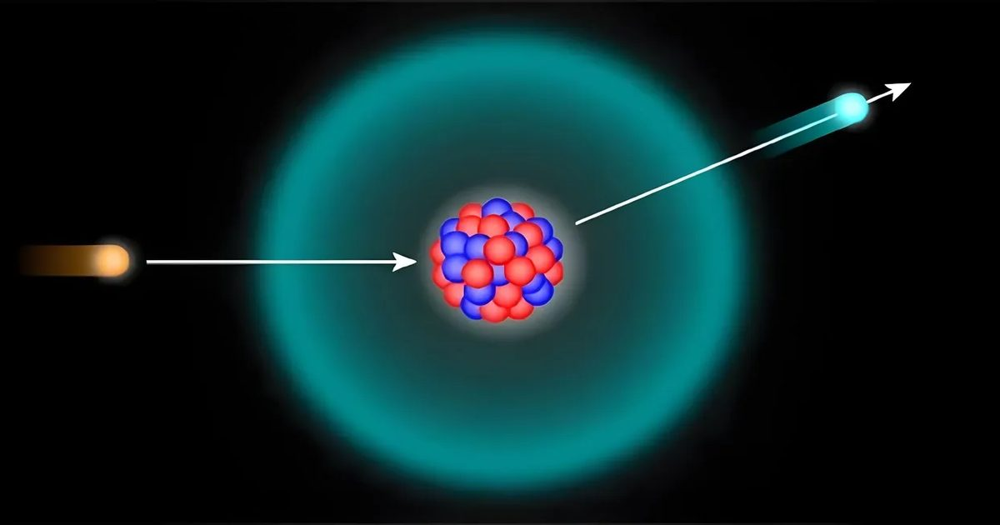

Физики предложили решение галлиевой аномалии без стерильных нейтрино
У ученых много проблем с нейтрино — элементарными частицами без заряда.
За объяснение одной из них — почему мы видим слишком мало солнечных нейтрино — в 2015 году вручили Нобелевскую премию по физике.
Тогда исследователи доказали существование нейтринных осцилляций, то есть превращение разных типов нейтрино друг в друга.
Во время поиска решения этой загадки астрофизики…